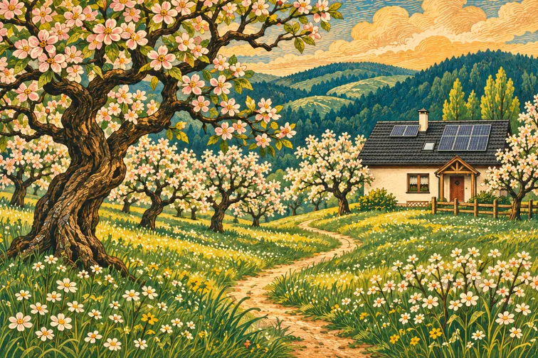

Rozdział I Miejsce
Dom wśród jabłoni
Mieszkamy w Makowie Podhalańskim. Z dala od ruchliwych dróg, pośród kilkudziesięcioletnich jabłoni, stoi nasz rodzinny dom.
Z owoców tych drzew powstają nasze naturalne soki jabłkowe. Troszczymy się o sad i o wszystko, co w nim żyje.
Dalej Kwiat